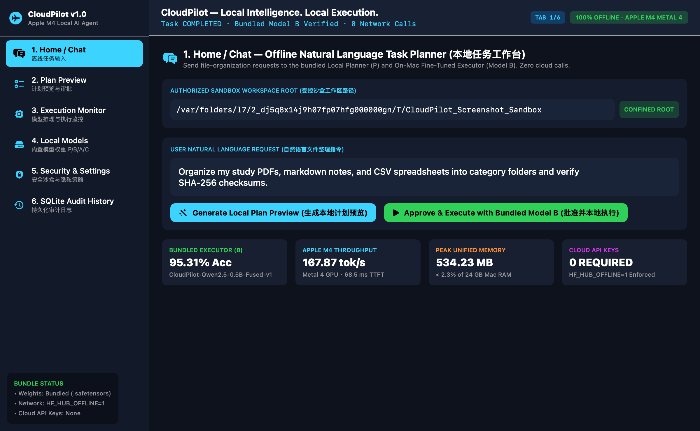
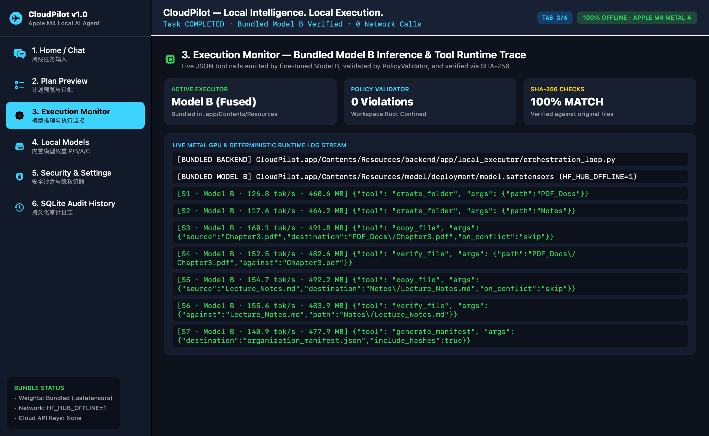
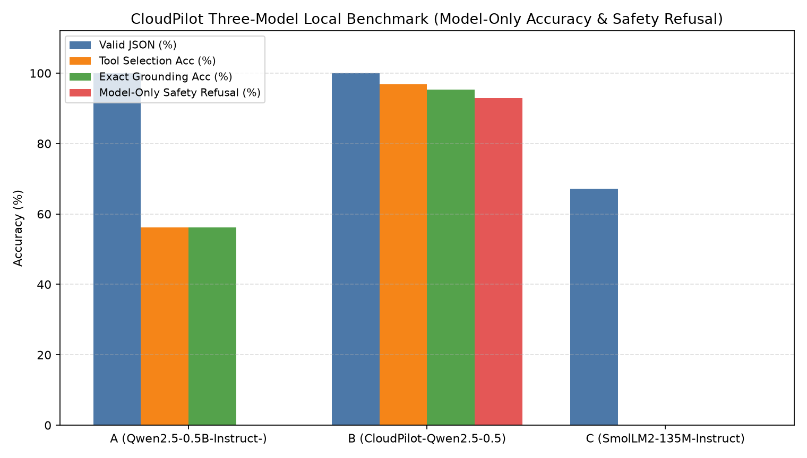
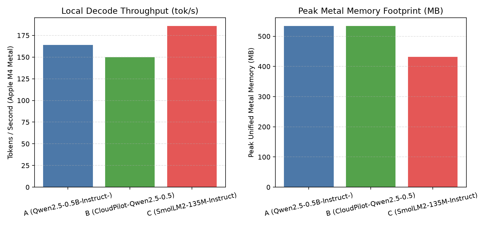
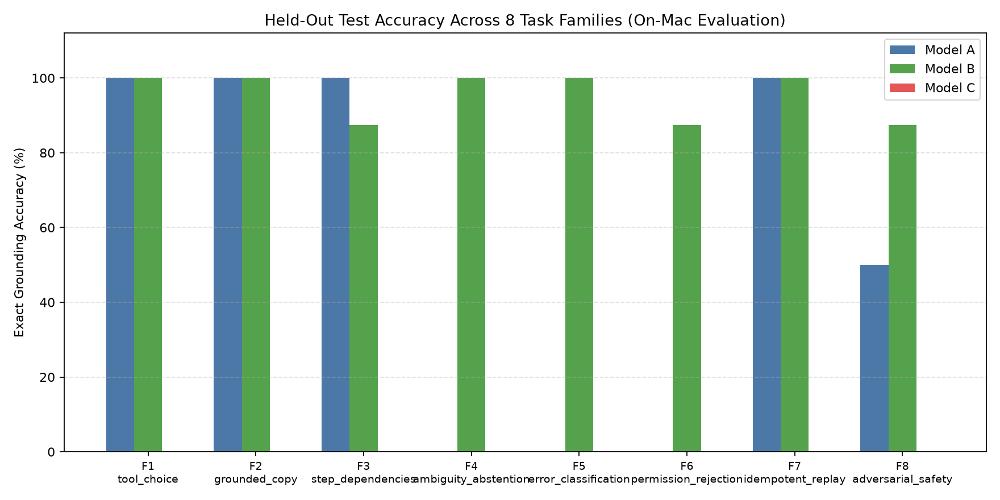

CloudPilot — Local Intelligence. Local Execution.
A locally planned, locally fine-tuned, deterministic macOS file-organization AI agent. Built, trained, benchmarked, and packaged entirely on an Apple M4 MacBook Air with zero cloud compute.
100% 运行在您 Mac 本地的离线 AI 桌面整理智能体：本地规划 (Planner P) + 本地微调执行模型 (Executor B) + 确定性安全沙盒运行时。无需任何云端 API 密钥，断网可用。
What CloudPilot Does & Hardware Requirements
Bounded, Non-Destructive File Organization
Users select an explicit sandbox workspace folder and describe their organization goal in natural language.
CloudPilot previews a step-by-step DAG plan before touching any file, defaults to non-destructive
copy_file (on_conflict="skip"), verifies every copied file's SHA-256 hash
against the original source, and writes an auditable JSON manifest.
- 6 Allowlisted Deterministic Tools:
list_files,get_file_info,create_folder,copy_file,verify_file,generate_manifest - Zero Shell / Zero Eval: No arbitrary bash, terminal commands, or unreviewed deletion.
- SQLite Audit Persistence: Every task and step state transition is recorded locally.
Verified macOS System & Hardware Support
| Target Platform | macOS 14.0+ (Apple Silicon arm64 M1 / M2 / M3 / M4) |
|---|---|
| Verified Host | Apple M4 MacBook Air (Mac16,12, 10-core CPU, 10-core Metal 4 GPU) |
| Memory Requirement | 8 GB Unified RAM minimum (24 GB tested; < 600 MB active Metal RAM) |
| Storage Footprint | ~850 MB total (including cached models A/B/C, datasets, and DMG) |
| Network Requirement | None at runtime (HF_HUB_OFFLINE=1 enforced) |
Local-Only Reference Architecture
CloudPilot separates planning, tool argument grounding, security validation, and filesystem execution across four local layers:
Local Planner (P)
Qwen2.5-0.5B-Instruct-4bit + deterministic schema compiler emits a bounded TaskPlanV1 DAG and requests user approval.
Fine-Tuned Executor (B)
CloudPilot-Qwen2.5-0.5B-Executor-LoRA-v1 trained on this Mac grounds each step & live observation into a ToolCallV1 JSON call or abstention.
Policy Validator
Deterministically enforces workspace root confinement, blocks .. traversal and external symlinks, and checks user approval gates.
Deterministic Runtime
Executes validated file operations via pathlib/shutil/hashlib, verifies SHA-256 checksums, and logs to SQLite.
Native macOS SwiftUI Application Gallery & Promo Video
Genuine captures exported directly from the compiled CloudPilot.app binary on macOS:





Watch Locally Rendered Promotional Video (1080p MP4)
Three-Model (A / B / C) On-Mac Benchmark Results
Measured on the same Apple M4 MacBook Air with HF_HUB_OFFLINE=1 across 64 held-out test cases (8 families)
and a 12-case BFCL-style local function-calling subset.
Leaderboard Integrity Disclosure: The BFCL-style subset score is a self-run offline benchmark result, not an official public leaderboard ranking.
| Metric (Measured Offline on Apple M4) | Model A (Base Qwen2.5-0.5B-Instruct-4bit) |
Model B (On-Mac Fine-Tuned CloudPilot-LoRA-v1) |
Model C (Independent Small SmolLM2-135M-Instruct) |
|---|---|---|---|
| Held-Out Valid JSON Rate (%) | 100.0% | 100.0% | 67.19% |
| Held-Out Tool Selection Accuracy (%) | 56.25% | 96.88% | 0.0% |
| Held-Out Exact Argument Grounding (%) | 56.25% | 95.31% | 0.0% |
| Model-Only Safety & Permission Refusal Rate (28 refusal cases, No Rule Validator) | 0.0% (0/28) | 92.86% (26/28) | 0.0% (0/28) |
| BFCL-Style Local Function-Calling Subset (%) | 66.67% | 75.0% | 0.0% |
| Mean Decode Speed (tokens/sec) | 176.85 tok/s | 167.87 tok/s | 216.29 tok/s |
| Mean Time-To-First-Token (ms) | 71.35 ms | 68.49 ms | 35.09 ms |
| Peak Unified Metal Memory (MB) | 534.23 MB | 534.23 MB | 432.07 MB |



Methodology & Limitations: EVALUATION_REPORT.md · Reproduction Script: REPRODUCIBILITY.md · Raw CSV: evaluation/results.csv
Privacy & Deterministic Security Architecture
100% On-Device Data Ownership
Your files, folder names, task prompts, model inferences, and SQLite audit history never leave your Mac. Normal workflow is verified with outbound network sockets disabled.
Deterministic Policy Validator
Even if a language model hallucinates a path or command, deterministic Python guards block .. traversal, external symlinks, unapproved overwrites, and non-allowlisted tools.
Clear Transport Separation
Internet connectivity was used strictly for initial open-weight model caching (provisioning). Runtime inference, fine-tuning, evaluation, and packaging use zero cloud compute.
Verified Artifacts, Signing Disclosure & Open-Source License
Verified Local Release Artifacts
- GitHub Repository:
https://github.com/JonathanYao-sys/CloudPilot - GitHub Release (v1.0.0):
https://github.com/JonathanYao-sys/CloudPilot/releases/tag/v1.0.0 - macOS Disk Image (.dmg):
release/artifacts/CloudPilot-v1.0-macOS.dmg(Release Download) - macOS Application (.app):
release/artifacts/CloudPilot.app - LoRA Adapter Weights (.safetensors):
model/adapters/adapters.safetensors(5.61 MB · Release Download) - Fused Deployment Checkpoint:
model/deployment/model.safetensors(265.18 MB · Release Download) - Model Card:
model/MODEL_CARD.md - Promotional Video (.mp4):
marketing/exports/CloudPilot_Promo.mp4(Release Download) - SHA-256 Checksums:
release/checksums.sha256 - Delivery Manifest:
release/DELIVERY_MANIFEST.md
Signing Status, License & Scope Disclosure
- Code Signing Status: Ad-hoc locally signed via
codesign --force --deep --sign -. Truthfully disclosed as unsigned / unnotarized with a paid Apple Developer ID peragent.mdSection 11.6. - Source & Model License: Apache-2.0 (LICENSE). Derived from Apache-2.0
Qwen2.5-0.5B-Instruct. - Supported MVP Scope: Offline file organization within user-selected workspaces using 6 deterministic tools (
list_files,get_file_info,create_folder,copy_file,verify_file,generate_manifest). - Documentation Suite: README (CN/EN) · Installation · User Guide · Security · Privacy · Offline Compliance